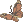

 credits
repth12.png
credits
- here are some the resources used while building this website. maybe they'll be useful for you as well?
- if you want even more resources, check out the links page!
layout
repth.neocities.org/theme - this site was built using repth's Theme 12 template. midnight solarium has recently been reworked from the ground up, but many of the design elements have remained consistent
- this site was built using repth's Theme 12 template. midnight solarium has recently been reworked from the ground up, but many of the design elements have remained consistent
XP.css - a recreation of the Windows XP GUI. the framework itself wasn't used to build this site, but the css for certain elements (e.g. buttons) were lifted directly from the repo
doqmeat's notebook template - midnight solarium's notebook page is a heavily edited version of doqmeat's. if you can't see the resemblance, that's because
fonts
Cozette - the font used in the headers
Fira Code - pretty much everything else
OpenDyslexic - dyslexia-friendly alt font
other alt fonts: Comic Sans, Lexend Exa & Mega,
Papyrus, Verdana, and Windgings
icons
Font Awesome - has lots of icons (some free, some paid) such as the ones in the nav bar
status feed
status.cafe - a neat site for posting statuses
Bechno Kid - followed her tutorial for displaying multiple statuses at once
misc
ai.robots.txt - Cory Dransfeldt's list of AI web crawlers. usec as the base for midnight solarium's robots.txt file